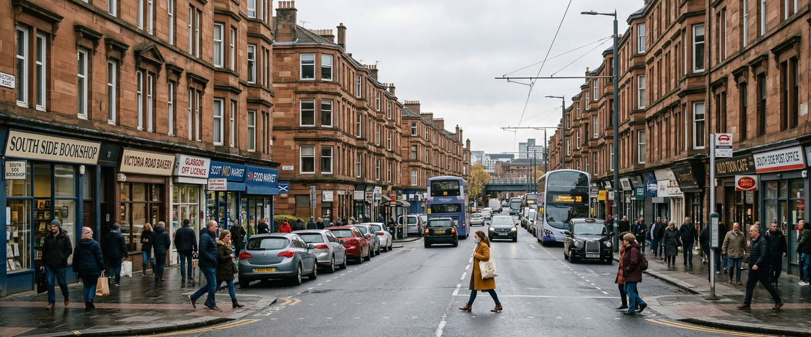
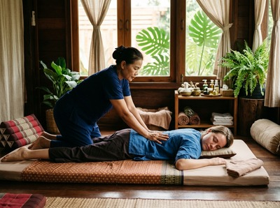

Thai massage in the Southside of Glasgow is well within reach for the thousands of residents spread across its many neighbourhoods: Shawlands, Strathbungo, Battlefield, Govanhill, Queen's Park, Pollokshields, and beyond.

The Southside is one of Glasgow's most diverse and well-loved parts of the city. It is shaped by wide green spaces, independent cafés, and a strong sense of local community. Families, professionals, students, and long-term Glaswegians all call it home.
The pace of life here tends to be quieter than the city centre. That said, the area's food and social scene has grown a great deal in recent years.
Serendipity Massage Therapy & Wellness is based on Hope Street in Glasgow City Centre. It is easy to reach from most parts of the Southside. For anyone living in Shawlands, Queen's Park, or Strathbungo, the journey into the centre is a familiar one.

A treatment at Serendipity fits naturally into a weekday lunch break, an after-work evening, or a Saturday that starts at the park and ends feeling genuinely rested. The studio is on the ground floor of Central Chambers, a well-known city centre address, and is easy to find.
The Southside attracts people who value quality and locality. That ethos extends to how they approach their health. Whether you are managing desk strain, recovering from sport, or carrying the tension of a busy family life, Serendipity offers a professional, therapeutic approach that goes well beyond a standard spa treatment. You can book your session online and secure a time that works around your schedule.
Serendipity offers a focused range of therapeutic massage treatments. Each one is designed to address specific physical and wellbeing needs. Every therapist is trained to a consistent standard using techniques developed by head therapist Jariya Malone.
That means the quality of each session is reliable, regardless of when you visit.
From the Southside, the most direct route into the city centre is by bus. First Bus routes 4, 4A, 5, and 6 run from the Victoria Road corridor directly into the centre. The journey takes around 15 to 20 minutes depending on where you start.
From Shawlands, routes 57 and 57A also connect regularly toward the centre.
For those who prefer the subway, Bridge Street station sits just south of the river. It links quickly to St Enoch station in the heart of the city centre. From St Enoch, Serendipity on Hope Street is a short five-minute walk.
Serendipity is located at Floor 1, Suite 50, Central Chambers, 93 Hope Street, Glasgow G2 6LD. Once you reach Hope Street, the entrance to Central Chambers is clearly signed.
Serendipity Massage Therapy & Wellness is a professional team practice, not a sole trader or a chain. Every therapist works from the same techniques, developed by Jariya Malone. That means clients from across the Southside get a consistent, high-quality experience every time.
That consistency matters when massage is part of a regular routine rather than an occasional treat. For those dealing with neck and shoulder tension from desk work, fatigue from weekend sport, or stress that builds quietly over weeks, Serendipity offers targeted relief grounded in real therapeutic technique. Book a treatment and experience the difference a skilled, well-trained therapist makes.
The Southside is one of Glasgow's most varied areas. It spans more than a dozen distinct neighbourhoods, from Govan in the west to Cathcart in the south. Its character ranges from the Greek Thomson terraces of Strathbungo and the quiet streets of Battlefield to the vibrant, multicultural atmosphere of Govanhill and Victoria Road.
For more on the area's history and neighbourhoods, visit Glasgow Southside on Wikipedia.
Serendipity is on Hope Street in Glasgow City Centre. Most parts of the Southside are around 15 to 20 minutes away by bus or subway. From closer areas like the Gorbals or Hutchesontown, the journey can be even shorter. The studio is easy to reach without a car, making it a practical option for a regular appointment.
First Bus routes 4, 4A, 5, and 6 run from Victoria Road into the city centre. Routes 57 and 57A serve Shawlands and Pollokshaws Road. The Glasgow Subway from Bridge Street connects to St Enoch station, which is just a five-minute walk from Serendipity on Hope Street. Both options are frequent and reliable, making it easy to plan around a booked appointment time.
Same-day availability depends on the current schedule. Serendipity offers online booking where you can check live availability and select a time that suits you. Booking in advance is recommended if you have a specific therapist or treatment in mind. You can check availability and book online at any time.
For anyone carrying tension built up through a long working week, traditional Thai massage is a strong choice. It uses assisted stretching and acupressure to release deep muscle tightness and restore mobility, particularly across the back, neck, and shoulders. If you prefer an oil-based treatment with a more calming effect, Thai Oil Massage or aromatherapy massage are excellent options. A member of the Serendipity team can help you choose the right session when you book.
Serendipity is open throughout the week, including evenings. That makes it easy to fit a session around a working day. The Hope Street location means anyone commuting through Glasgow can add a treatment to the start or end of their day without a long detour. Booking online takes just a couple of minutes and confirms your appointment straight away.